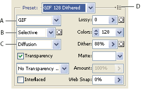
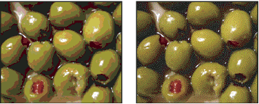
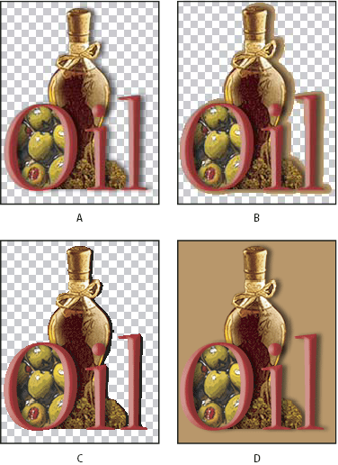
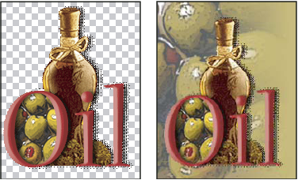

GIF and PNG‑8 optimization options
GIF is the standard format for compressing images with flat color and crisp detail, such as line art, logos, or illustrations with type. Like the GIF format, the PNG‑8 format efficiently compresses solid areas of color while preserving sharp detail.
PNG‑8 and GIF files support 8‑bit color, so they can display up to 256 colors. The process of determining which colors to use is called indexing, so images in GIF and PNG‑8 formats are sometimes called indexed color images. To convert an image to indexed color, Photoshop builds a color lookup table, which stores and indexes the colors in the image. If a color in the original image does not appear in the color lookup table, the application either chooses the closest color in the table or simulates the color using a combination of available colors.
In addition to the following options, you can also adjust the number of colors in the image’s color table. See Customize the color table for GIF and PNG‑8 images.

- A.
- File Format menu
- B.
- Color Reduction Algorithm menu
- C.
- Dithering Algorithm menu
- D.
- Optimize menu
- Lossy (GIF only)
-
Reduces file size by selectively discarding data. A higher
Lossy setting results in more data being discarded. You can
often apply a Lossy value of 5–10, and sometimes up to 50, without
degrading the image. The Lossy option can reduce file size by 5%
to 40%.
Note: You cannot use the Lossy option with the Interlaced option or with Noise or Pattern Dither algorithms.
- Color Reduction Method and Colors
-
Specifies a method for generating the color lookup table
and the number of colors you want in the color lookup table. You
can select one of the following color reduction methods:
- Perceptual
- Creates a custom color table by giving priority to colors for which the human eye has greater sensitivity.
- Selective
- Creates a color table similar to the Perceptual color table, but favoring broad areas of color and the preservation of web colors. This color table usually produces images with the greatest color integrity. Selective is the default option.
- Adaptive
- Creates a custom color table by sampling colors from the predominant spectrum in the image. For example, an image with only the colors green and blue produces a color table made primarily of greens and blues. Most images concentrate colors in particular areas of the spectrum.
- (Restrictive) Web
- Uses the standard 216‑color color table common to the Windows and Mac OS 8‑bit (256‑color) palettes. This option ensures that no browser dither is applied to colors when the image is displayed using 8‑bit color. (This palette is also called the web‑safe palette.) Using the web palette can create larger files, and is recommended only when avoiding browser dither is a high priority.
- Custom
-
Uses a color palette that is created or modified by the user.
If you open an existing GIF or PNG‑8 file, it will have a custom
color palette.
 Use the Color Table palette
in the Save For Web & Devices dialog box to customize the color
lookup table.
Use the Color Table palette
in the Save For Web & Devices dialog box to customize the color
lookup table. - Black and White, Grayscale, Mac OS, Windows
- Use a set palette of colors.
- Dithering Method and Dither
-
Determines
the method and amount of application dithering. Dithering refers
to the method of simulating colors not available in the color display
system of your computer. A higher dithering percentage creates the
appearance of more colors and more detail in an image, but can also
increase the file size. For optimal compression, use the lowest percentage
of dither that provides the color detail you require. Images with primarily
solid colors may work well with no dither. Images with continuous-tone color
(especially color gradients) may require dithering to prevent color
banding.

GIF image with 0% dither (left), and with 100% dither (right)
You can select one of the following dithering methods:
- Diffusion
- Applies a random pattern that is usually less noticeable than Pattern dither. The dither effects are diffused across adjacent pixels.
- Pattern
- Applies a halftone-like square pattern to simulate any colors not in the color table.
- Noise
- Applies a random pattern similar to the Diffusion dither method, but without diffusing the pattern across adjacent pixels. No seams appear with the Noise dither method.
- Transparency and Matte
-
Determines how transparent pixels in the image are optimized.
-
To make fully transparent pixels transparent and blend partially transparent pixels with a color, select Transparency and select a matte color.
-
To fill fully transparent pixels with a color and blend partially transparent pixels with the same color, select a matte color and deselect Transparency.
-
To select a matte color, click the Matte color swatch and select a color in the color picker. Alternatively, select an option from the Matte menu: Eyedropper (to use the color in the eyedropper sample box), Foreground Color, Background Color, White, Black, or Other (to use the color picker).

Examples of transparency and matting
- A.
- Original image
- B.
- Transparency selected with a matte color
- C.
- Transparency selected with no matting
- D.
- Transparency deselected with a matte color
-
- Transparency Dithering
-
When
the Transparency option is selected, you can choose a method for
dithering partially transparent pixels:
-
No Transparency Dither applies no dither to partially transparent pixels in the image.
-
Diffusion Transparency Dither applies a random pattern that is usually less noticeable than Pattern dither. The dither effects are diffused across adjacent pixels. If you select this algorithm, specify a Dither percentage to control the amount of dithering that is applied to the image.
-
Pattern Transparency Dither applies a halftone-like square pattern to partially transparent pixels.
-
Noise Transparency Dither applies a random pattern similar to the Diffusion algorithm, but without diffusing the pattern across adjacent pixels. No seams appear with the Noise algorithm.

Example of Pattern Transparency dithering (left) and applied to a web page background (right)
-
- Interlace
- Displays a low-resolution version of the image in a browser while the full image file is downloading. Interlacing can make downloading time seem shorter and can assure viewers that downloading is in progress. However, interlacing also increases file size.
- Web Snap
- Specifies a tolerance level for shifting colors to the closest web palette equivalents (and prevent the colors from dithering in a browser). A higher value shifts more colors.